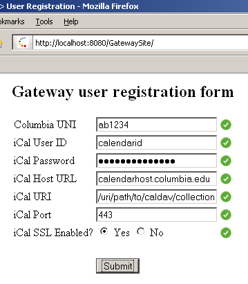

Milind Nimesh
Suhas Suhas
This report describes a gateway between an iCalendar calendar server that implements CalDAV and a SIP Presence server. Users gain access to the gateway service by registering their calendar account with the gateway through a web interface. The gateway then syncs their calendar events with the Presence server. Periodic polling of the calendar server provides automated busy tracking for those subscribing to user's presence information
The gateway was implemented in Java and leverages the ical4j, ical4j-connector, jain-sip, and various Apache libraries for making HTTP-like requests and logging.
The server will start, displaying something similar to the following:
$> ./run.sh -q
# Listening TCP port for registrations. Registration servlet will make TCP
# connection to this port to pass server new registration account.
# (default: 1783)
RegistrationListenPort 1783
# Size of the thread pool for polling registered user's calendar accounts
# (default: 30)
ThreadPoolSize 30
# Interval between pollings of the iCalendar server. Time measured in
# milliseconds
# (default: 30000, e.g., 30 secs)
PollInterval 30000
# Name of server java.util.Logger logfile
# (default: gatewayical.log)
LogfileName gatewayical.log
# Level of debug info saved to the logfile.
# Possible values include: finest, fine, info, severe, warning, off
# (default: info)
LogfileLevel info
# Hostname of the Apple iCalendar server
# (default: calendar.cs.columbia.edu)
ICalendarHost calendar.cs.columbia.edu
# Destination port of the calendar server
# (default: 8443)
ICalendarPort 8443
# Is the calendar server expecting SSL connections
# (default: true)
ICalendarUseSSL true
# Hostname of the Presence server where notifications based upon user's
# calendars should be sent.
# (default: presence.cs.columbia.edu)
PresenceHost presence.cs.columbia.edu
# Destination port of the presence server
# (default: 5060)
PresencePort 5060
# Is the presence server expecting SSL connections
# (default: false)
PresenceUseSSL false
# Username for accessing presence server
# (default: presence)
PresenceUsername presence
# Time (in msec) to wait for a response from the presence server before
# assuming the server is done (fatal exception).
# (default: 500)
PresenceTimeout 500
# Hostname where the mysql server is running
# (default: localhost)
MysqlHost localhost
# Name of mysql database for storing the gateway registrations.
# (default: icalgateway)
MysqlRegistrationDB icalgateway
# Mysql server's listening port. (most likely won't need to change this)
# (default: 3306)
MysqlPort 3306
# Mysql username for database MysqlRegistrationDB
# (default: root)
MysqlUsername root
# Password for MysqlUsername
# (default: <none>, i.e., commented out)
# MysqlPassword mypassword
Users must register their iCalendar server information (host, port, URI) and credentials (username, password) with the gateway's MySQL database in order to use the service. Registration is provided via a web form that prompts the user for the relevant information. The the form is submitted, the servlet adds the new gateway account to the registration database as well as creates a new entry in the presence database from which watchers may choose to subscribe. Once registered, the user's record is read by the server's bootstrap routine during server startup. The bootstrap process accesses the database to obtain all the relevant info for registered users, saving a data structure in memory for each such "account".
Figure 1: Registration UI
For *NIX and win32 platforms, please perform an ANT build:
$> cd ical-gateway/